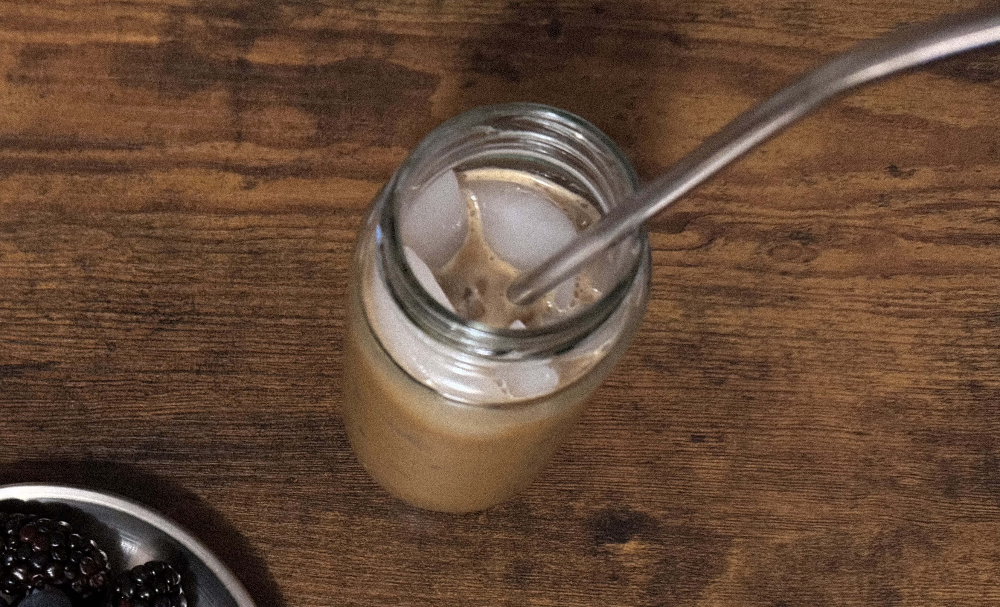

.png)
06/2026
my love for sardines has been growing
through each meal.
happy birthday, kelela.
ከለላ
happy juneteenth!
happy pride month!
05/2026
making and eating meals at home. >
tomodachi life has taken over my life.
04/2026
finished the series ‘dtf st. louis,’ and i sobbed.
i love you, floyd raymond smernitch.
would love a 3ds meetup!
03/2026
happy trans day of visibility!

after several tries, i don’t think olives are for me,
and that’s okay.
adhd burnout is hell.
march is going by so quick.
growing to love the smell of oranges on my hands.
rough mercury retrograde, but i'm trying.
02/2026

obsessed with the interface of mubi.
here's to new beginnings!
at only a quarter of life, i'm getting more and more excited
for my thirties. an abundance in success, love, wisdom,
knowledge, and amazing health.
due for a rewatch of 'twin peaks.'
finally finding the words for it all.
perfect image to describe my life recently:

my love for pinterest is back.
i can finally delete instagram.
i love you, ves. ❦
to the moon and back.
excited for 'the devil wears prada 2!'
binge-watching the first one again currently.
so far this year, writing things down has gotten me through
a lot. make a map of your brain — not digitally, but on paper!
especially your ideas. every single one because well...
david lynch said it best here.
happy black history month! that is all.
01/2026

crushing with 5-10% of a chance.
learning to appreciate solitude. it's beautiful.
my love/hate relationship with coffee continues. currently
the only way to keep myself awake & focused on creating.


update: more hate than love! strictly back to tea.
my life is gonna be so awesome soon. i know it.
oh to be in someone's wallet + journal cover.
me & my sony walkman against the world.
single-purpose technology is slowly making a return into my life.
my favorite photo ever!
rest in peace, david lynch.

2025